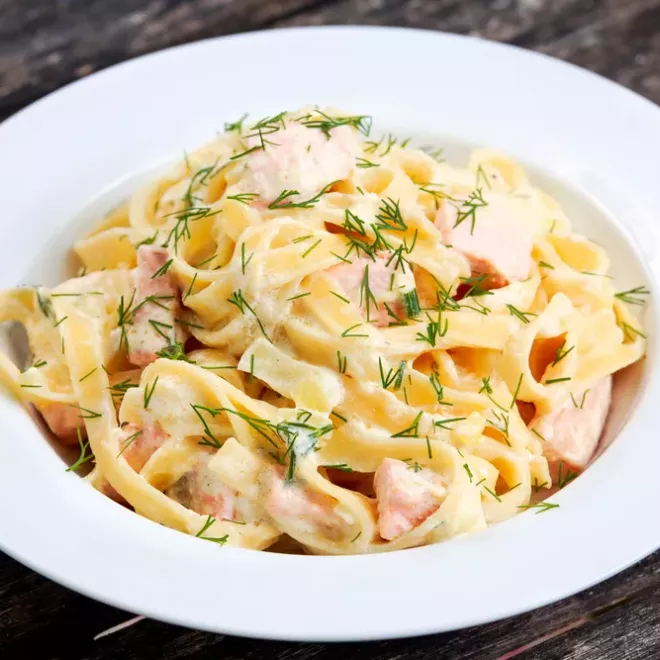

Pâtes à la carbonara au saumon

Description
Les pâtes sont rapides et simples à cuisiner, même quand on n’a pas d’idée. Revisitez vos classiques avec cette recette succulente de pâtes à
la carbonara au saumon. Le saumon fumé se marie à la perfection avec une crème onctueuse et gourmande et des pâtes al dente. Cette recette
se réalise en quelques tours de main et régale toute la famille !
Ingrédients :
- 500 g de tagliatelles fraîches
- 60 g de parmesan râpé
- 15 cl de crème liquide
- Gros sel
- 220 g de saumon fumé épais
- 4 jaunes d'œuf
- Ciboulette
- Poivre
Préparation :
- Faites cuire dans un grand faitout d'eau bouillante salée les tagliatelles selon le temps indiqué sur l'emballage.
- Versez la crème et le parmesan dans une petite casserole et portez à frémissement. Incorporez-y 1 c. à soupe d'eau
cuisson des pâtes. Salez peu et poivrez généreusement. Taillez le saumon fumé épais en lamelles.
- Egouttez les pâtes, mélangez-les à la sauce chaude. Agrémentez de saumon et de ciboulette ciselée. Répartissez les
pâtes à la carbonara au saumon dans 4 assiettes et surmontez d'un jaune d'œuf. Servez aussitôt.
Menu